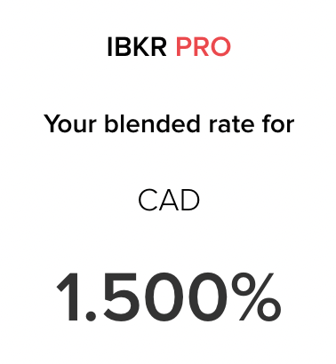
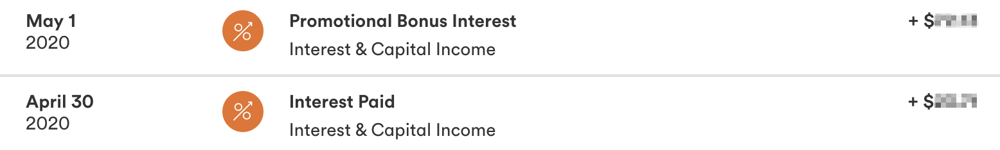
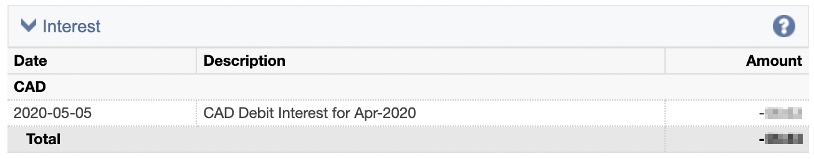

💸 Arbitraging Interest Rates for Fun
Disclaimer: this is not financial advice and the strategy shown is for entertainment purposes only.
Introduction
Today I'm going to teach you one of my secrets… 🤫
I'm going to teach you about an arbitrage opportunity that anyone in Canada with money invested outside of a registered account can execute by borrowing money at a low rate and depositing it in a high-interest savings account.
📊 The Arbitrage Strategy
Interactive Brokers offers margin loans with notoriously low interest rates. At the time of writing, a margin loan of less than $130,000 CAD has an interest rate of 1.50%.

Tangerine (a Canadian bank) routinely offers bonus interest rates of 1.50% - 2.50% on their savings account, for a limited time. I myself have a 1.60% bonus rate right now:

But my buddy Val for example has a bonus rate of 2.00%:

If you were to borrow on margin from Interactive Brokers and deposit the money in a savings account with a bonus interest rate on Tangerine, you could earn the delta (difference) between the two rates.
I had a 2.50% bonus rate when I executed this strategy for the first time in 2020, giving me a nice 1% profit.
Please note that this quite abnormal and that it is clearly an inefficiency in the market which may not last, getting high interest rates from Tangerine is already becoming more difficult.
I am personally very debt averse but borrowing money to have it sitting in a savings account earning interest sounds pretty good to me.
📚 What's a Margin Loan?
A margin loan is a loan backed by collateral in the form of investments, typically securities like stocks or ETFs.
Normally, those loans are offered to clients so that they can do leveraged investing (investing with money they don't have). But interestingly, Interactive Brokers lets you use your margin however you want. Meaning that you can withdraw more than the cash balance you carry in your account.
Mr. Money Mustache (an American personal finance blogger) famously used it to impulse buy a house recently.
🔍 An Example
Using the example of taking a $25,000 margin loan at a 1.50% interest rate and depositing it at a 2.50% interest rate:
25000 * (0.025-0.015)250
The gain would be $250 over an entire year. Tangerine bonus rates usually only last for a few months, so you would have to divide by 12 and multiply by the number of months you have a promo rate that's higher than the Interactive Brokers margin rate. For example for 3 months of promo rate:
250 / 12 * 360
So $60 over 3 months for borrowing $25,000… Would it be worth it for you?
Know that this is a volume's game: the more you borrow, the smaller the margin interest Interactive Brokers would charge you, and the higher interest you would get from Tangerine (or any other bank offering a high-interest savings account).
(Please note Tangerine has a $1,000,000 limit on their bonus interest rate and stops paying bonus interest rate above that.)
🤔 Thinking about Taxes
So of course that amount would be taxable as interest income.
An interesting feature with Canadian taxes is that interest expenses can be claimed (line 22100) if the money was used for an "investment" that generates dividend or interest.
I will let it to your interpretation on whether a savings account is an "investment" and whether the interest expenses would be eligible as I could not find clear wording from the Canada Revenue Agency about it.
🧑🌾 In Practice
The actual process is pretty simple. We are going to withdraw money from Interactive Brokers the usual way, creating a debit balance using a margin loan. If you already have a linked bank account, this is very easy.
Navigate to Transfer & Pay > Transfer Funds > Make a Withdrawal. Select or add a new bank account. It is possible to withdraw up to the amount listed alongside Cash Available for Withdrawal (assuming margin loan).
I would highly advise against withdrawing the maximum as Interactive Brokers would sell your collateral (investments) at a loss if they go down in value.

Money should arrive in your bank account in 2-3 business days for Canadian EFTs.

And let the bonus interest accumulate…

While Interactive Brokers is charging us debit interest on our monthly statement… (Reports > Statements > Activity)

The margin rate from Interactive Brokers needs to be monitored daily as it can move (up or down) anytime. The bonus rate from Tangerine is "locked" so less worries on that side.
Conclusion
Even though the actual gains are quite meager, the satisfaction of "hacking" the financial system makes it all worth it to me. Who doesn't like free money? 😏
There are two ways this strategy could be optimized:
- Try to get a lower margin rate using SPX box spreads as described in this LessWrong post. A SPX box spread is a combination of four options that cancel each other on the S&P 500 index (one of the most liquid option market). Just be aware that this would be denominated in USD, not CAD.
- Managing to get a higher interest rate using a "locked" investment like a fixed-term deposit (a GIC in Canada for example). Note that this would expose you to the risk of the margin rate going up while your money wouldn't be redeemable early.